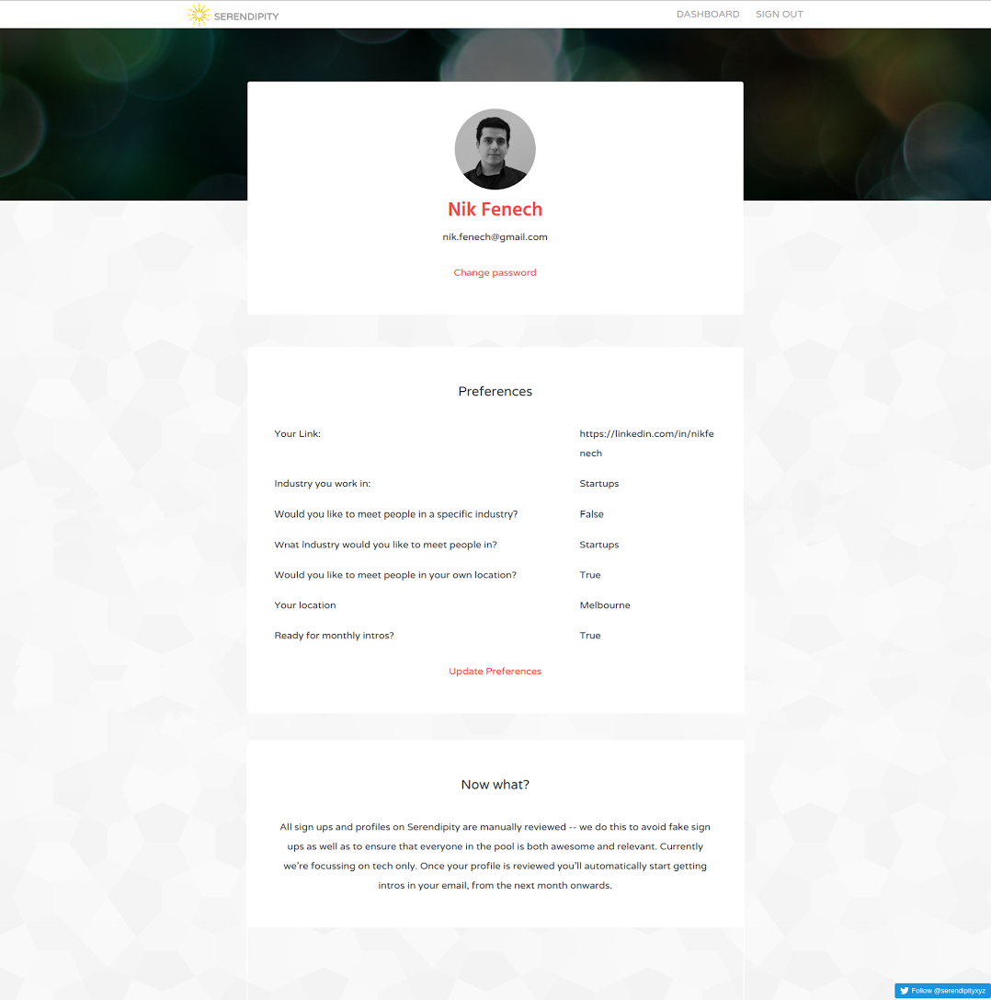
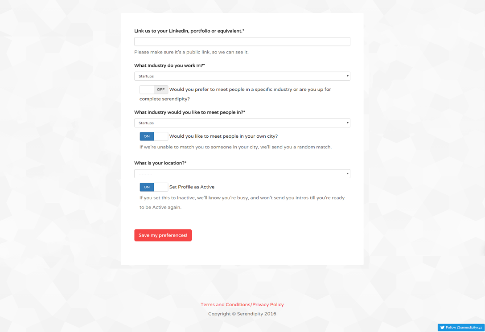
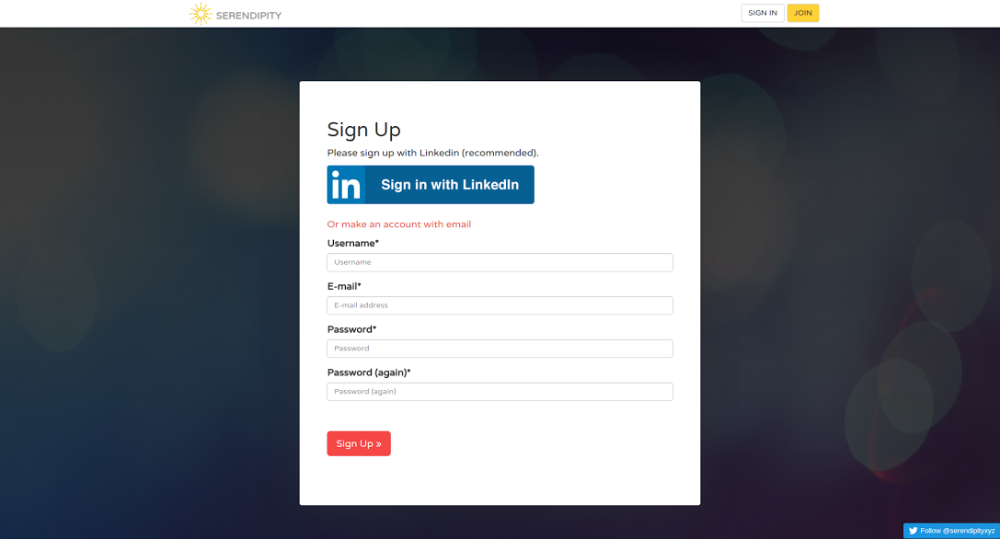

Recently, I have been working on the interface for Serendipity -- a new service that connects professionals. Serendipity is based on an interesting concept -- they send one email a month randomly introducing two professionals to each other. Serendipity was very well received on Product Hunt, and nominated for the best Tech Product of the Year (2015).
Currently, a lot of the functionality in matching the users and sending the emails is handled on the backend, and there is not much for the user to actually see or interact with. However, Serendipity is now looking to develop a dashboard for users to log in and manage their accounts from.
Below you can see some images of the interface I have been working with Serendipity's founder to create.
  